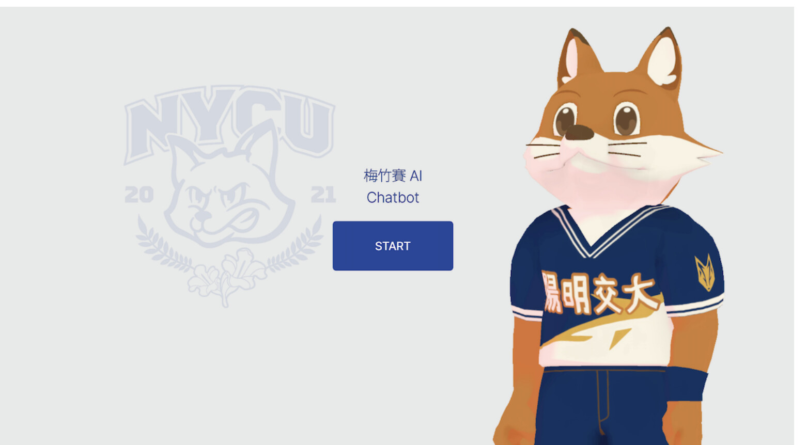
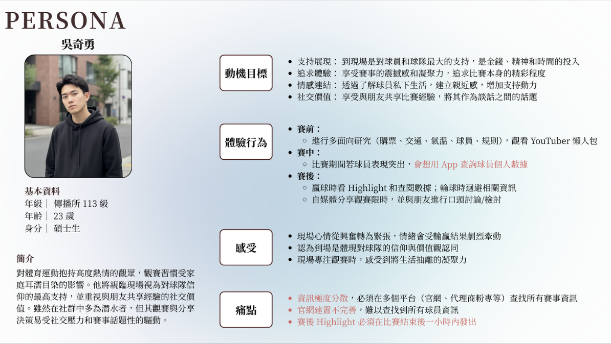
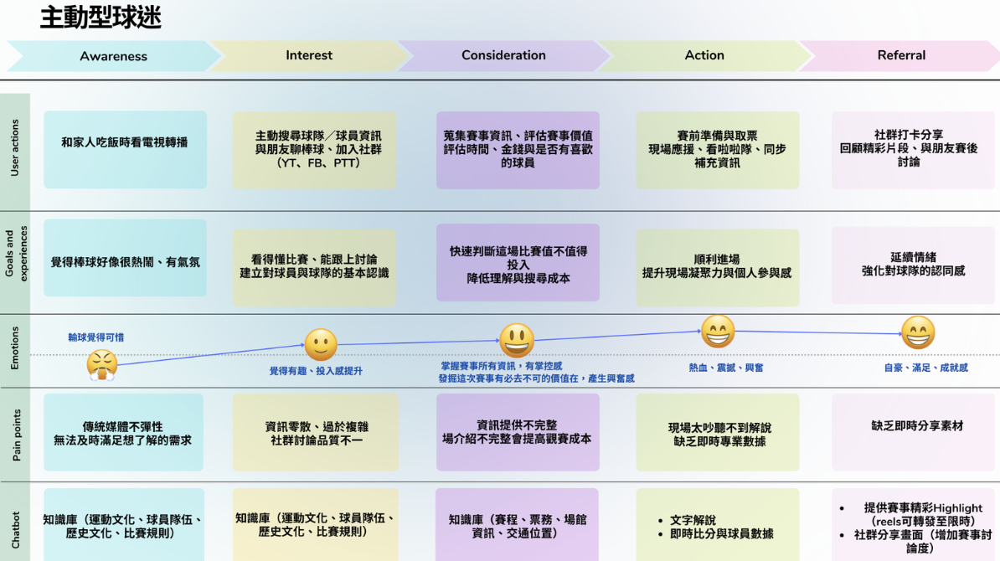
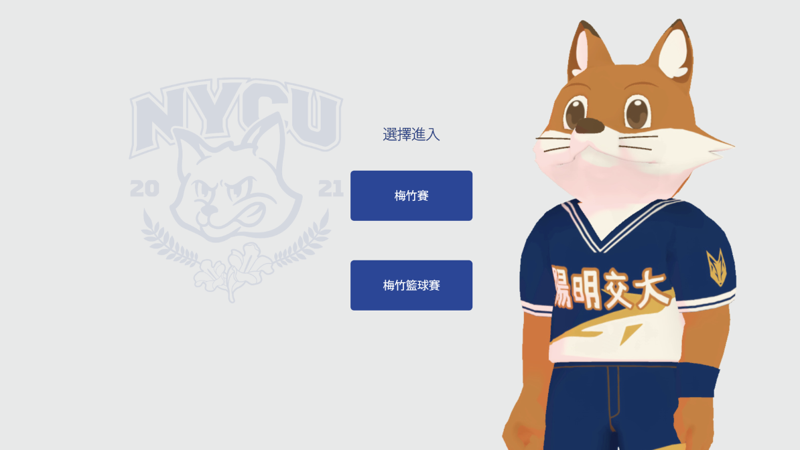
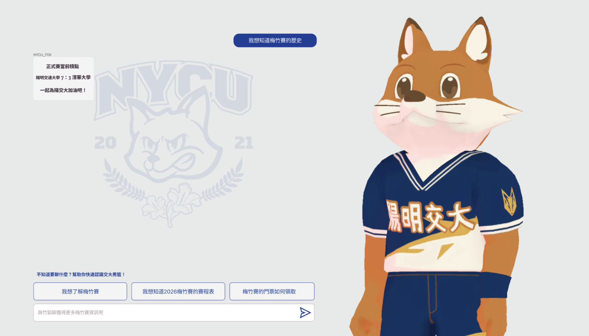
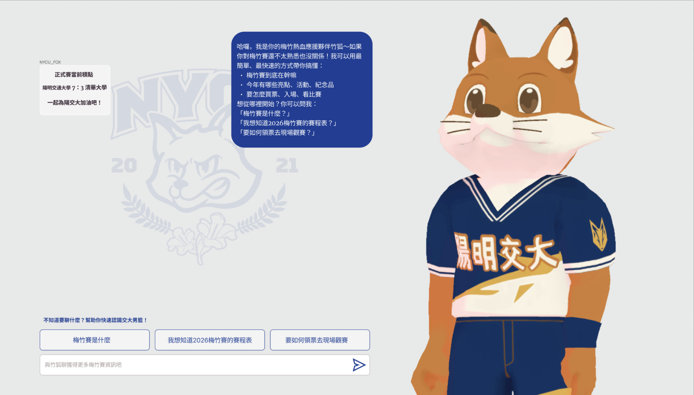

Onboarding Was Unclear
使用者一開始不清楚 Chatbot 的身份、用途與可詢問內容。

Project Overview
本專案以梅竹賽校園文化為情境，設計一套協助使用者理解賽事、探索文化內容，並進一步參與活動的 AI Chatbot。
研究聚焦於資訊取得、角色一致性、回答準確度與互動引導，並透過使用者測試與五輪 Prompt 迭代，逐步調整 Chatbot 的知識來源、語氣設定與對話邏輯。
我參與測試設計、操作觀察與研究結果整理，並根據測試問題，持續迭代 Chatbot 的角色設定、知識來源與回答規則。
Experience Strategy
Chatbot 以行銷漏斗為基礎，將使用者體驗分為四個階段，讓對話從建立認知逐步發展至實際參與。

Research Setup
研究邀請 5 位受試者，包含技術端與一般使用者，依四個體驗階段完成情境任務與延伸追問。
Persona & Customer Journey
透過訪談與操作觀察，整理主動型球迷的參與動機、各階段行為與資訊需求，作為 Chatbot 知識架構與對話設計的依據。


Key Findings
使用者一開始不清楚 Chatbot 的身份、用途與可詢問內容。
稱謂、回答順序與角色立場不一致，降低回覆可信度。
系統可能生成知識庫外資訊，或出現賽程與內容錯配。
缺乏 Loading、Enter 送出、對話記憶與訊息滑動等功能。
Prompt Evolution

建立角色語氣、任務架構與知識庫內容。
加入校名、代稱與資訊排序規則。
限制系統只能依據知識庫內容回覆。
補充內容，加入回答檢查與階段引導。
加入顯示順序、格式規範與階段鎖定。
global_settings.naming
retrieval · execution_guard
formatting_rules
phase_progression_lock
Representative Iterations
01
Finding
稱謂與角色立場不一致，同時出現「我們清大」與「我們交大」。
Prompt Response
建立校名、代稱與回答順序規則，明確定義角色立場。
Result
後期版本中的角色立場與資訊排序更一致。
02
Finding
回覆會過早結束，或跨越不同體驗階段。
Prompt Response
加入階段鎖定規則，每個階段只能引導至下一階段。
Result
對話流程在後期測試中更穩定地依序推進。

03
Finding
系統可能錯配賽事資訊，或生成知識庫中不存在的內容。
Prompt Response
限制回覆來源，查無資料時需明確拒答，不得自行推測。
Result
知識庫外問題的處理方式更一致，虛構內容明顯減少。

Solution Summary
五輪測試將使用者回饋轉化為角色設定、資訊檢索、格式控制與階段推進規則，使 Chatbot 的回答立場、資訊來源與互動順序逐步穩定。

Refined Interaction
測試後的介面透過明確入口選擇、預設問題與開場介紹，協助使用者理解 Chatbot 的服務範圍，降低開始互動時的不確定感。



Results
五個測試版本的 CUQ 平均分數為 80.6，最低 64，最高 90.6。

在本次小樣本測試中，部分受試者於體驗後表達更高的賽事參與意願；此結果僅作為探索性觀察。
Prototype Limitations
部分問題屬於前端與系統層限制，包括 Loading feedback、Enter 送出、對話記憶、訊息滑動、文字框自動調整，以及圖片與表格支援。
後續優化需要同時處理 AI 回覆邏輯與介面互動，而不是只調整 Prompt。
Reflection
這個專案讓我理解，Conversational AI 的體驗不只取決於回答是否正確，也受到角色立場、資訊來源、回答順序與互動回饋影響。
Prompt 可以改善內容、語氣與對話邏輯，但無法取代前端回饋、對話記憶與系統功能。後續設計需要同時處理 AI 行為與介面體驗。